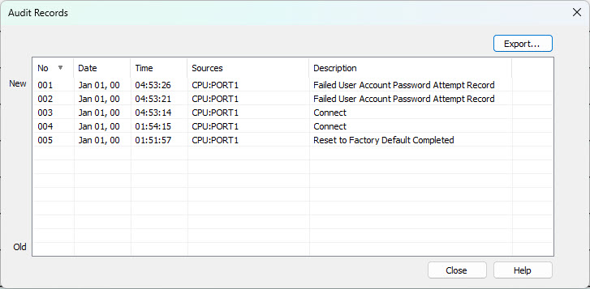

Topic: CL346

| Audit Records |
Topic: CL346
|
In CLICK Programming version 3.8, Audit logs have been added for ALL CLICK PLUS CPUs to record key operations performed on the PLC, helping improve security and traceability. These logs can be stored on the PLC and transferred to a SD card or PC when connected to PLC. These records are automatically recorded and cannot be turned off. A maximum of 100 logs are saved before the oldest are overwritten by newer entries. Audit Records cannot prevent unauthorized access—they are a detection & accountability tool only.

|
|
Note: All logs will be deleted on a Factory Default Reset and a single entry will be added reading "Reset to Factory Default Completed" |
|
Audit Records dialog displays the data in the following columns:
1. No.: Entry Number with the lowest number being the newest entry. This column can be sorted NEWEST to OLDEST or OLDEST to NEWEST
2. Date: Date in the PLC of the triggered event
3. Time: Time in the PLC of the triggered event
4. Sources: Where the event was triggered. The sources are listed below:
CPU: USB/RS232
CPU: PORT1 (CLICK TOOL)
CPU: WLAN (CLICK TOOL)
CPU: PORT1 (Remote PLC)
CPU: WLAN (Remote PLC)
CPU: Bluetooth (Remote PLC)
CPU: Bluetooth (Provisioning App)
5. Description: The events in the Description column are as follows:
Connect to PLC
Write Data to PLC
Read Project to PLC
Write Project to PLC
Write Date and Time
Delete all files on SD
Eject SD card
Copy System Log data to SD card
Clear History
Reset to Factory Default Completed
Changes from RUN to STOP and STOP to RUN
Clicking the EXPORT button will download the Audit Records to the PC in .csv file format.
Data can also be transferred to a SD card using the SD Control Center.